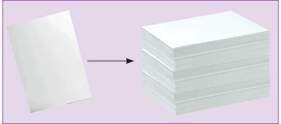
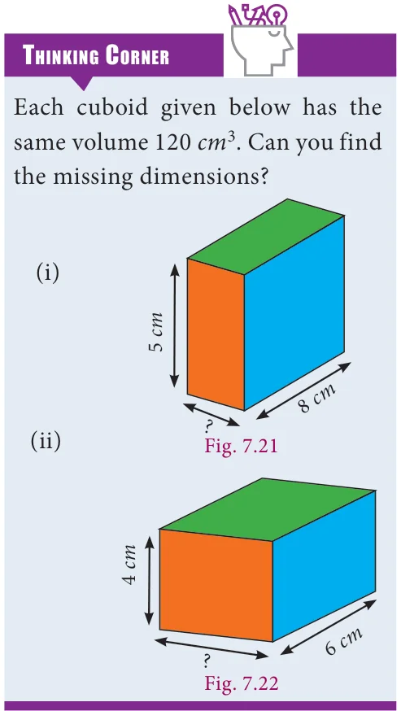
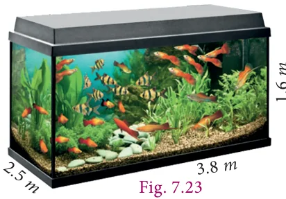
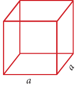
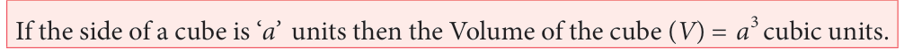
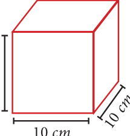
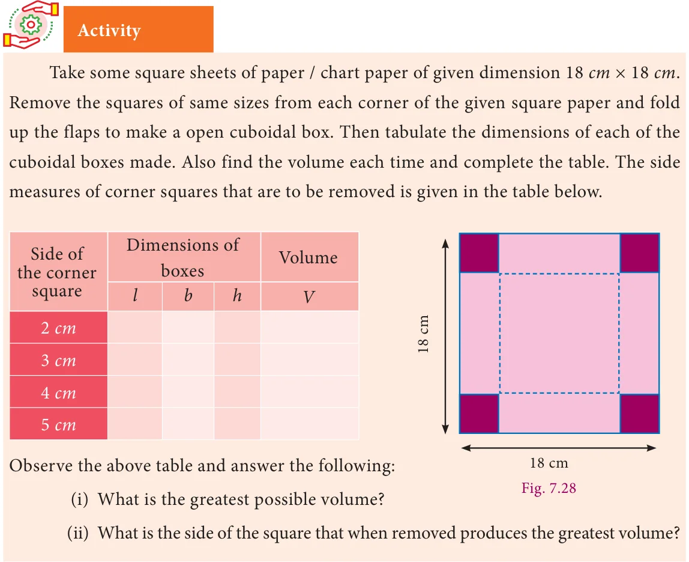

All of us have tasted 50 ml and 100 ml of ice cream. Take one such
100 ml ice cream cup. This cup can contain 100 ml of water, which means that the capacity or volume of that cup is 100 ml. Take a 100 ml cup and find out how many such cups of water can fill a jug. If 10 such 100 ml cups can fill a jug then the capacity or volume of the jug is 1 litre\((10 \times 100 \; ml = 1000 \; ml = 1l)\). Further check how many such jug of water can fill a bucket. That is the volume of the bucket. Likewise we can calculate the volume of any such things.

Volume is the measure of the amount of space occupied by a three dimensional solid.
Cubic centimetres \(cm^3\), cubic metres \(m^3\) are some cubic units to measure volume.
Volume of the solid is the product of 'base area' and 'height'. This can easily be understood from a practical situation. You might have seen the bundles of A4 size paper. Each paper is rectangular in shape and has an area (=lb). When you pile them up, it becomes a bundle in the form of a cuboid; h times lb make the cuboid.

7.5.1 Volume of a Cuboid

Let the length, breadth and height of a cuboid be l, b and h respectively.
Then, volume of the cuboid
\(V =\) (cuboid's base area) \(\times\) height length = (l \(\times\) b) \(\times h =\) lbh cubic units Fig. 7.19


The length, breadth and height of a cuboid is 120 mm, 10 cm and 8 cm respectively. Find the volume of 10 such cuboids.
Solution
Since both breadth and height are given in cm, it is necessary to convert the length also in cm.
So we get, \(l = 120\) mm \(= \frac{120}{10} =12\) cm and take \(b = 10\) cm, \(h = 8\) cm as such. Volume of a cuboid \(= l \times b \times h\)

\(=12 \times 10 \times 8\)
\(= 960 \; cm^3\)
Volume of 10 such cuboids \(=10 \times 960\)
\(= 9600 \; cm^3\)

The length, breadth and height of a cuboid are in the ratio 7:5:2. Its
volume is 35840 \(cm^3\). Find its dimensions.
Solution

Let the dimensions of the cuboid be
\(l = 7x\), \(b = 5x\) and \(h = 2x\).
Given that volume of cuboid \(= 35840 \; cm^3\)
\(l \times b \times h = 35840\)
\((7x)(5x)(2x) = 35840\)
\(70x^3 = 35840\)
\(x = \frac{35840}{70}\)
\(x^3 = 512\)
\(x = \sqrt[3]{8 \times 8 \times 8}\)
\(x = 8\) cm
Length of cuboid \(= 7x = 7 \times 8 = 56cm\) Breadth of cuboid \(= 5x = 5 \times 8 = 40cm\) Height of cuboid \(= 2x = 2 \times 8 =16\) cm

The dimensions of a fish tank are \(3.8 m \times 2.5 m \times 1.6 m\). How many litres of water it can hold?
Solution
Length of the fish tank \(l =3.8 m\) Breadth of the fish tank \(b =2.5 m\) , Height of the fish tank \(h =1.6 m\) Volume of the fish tank \(= l \times b \times h\)

\(= 3.8 \times 2.5 \times 1.6 = 15.2 \; m^{3} = 15.2 \times 1000\) litres \(= 15200\) litres

The dimensions of a sweet box are 22 cm \(\times 18\) cm \(\times 10\) cm. How many such boxes can be packed in a carton of dimensions \(1 m \times 88\) cm \(\times 63\) cm?
Solution
Here, the dimensions of a sweet box are Length (l) \(= 22cm\), breadth (b) \(= 18cm\),
height (h) \(= 10\) cm.

Volume of a sweet box \(= l \times b \times h\)
\(= 22 \times 18 \times 10 \; cm^3\)
The dimensions of a carton are Length (l) \(= 1m= 100\) cm, breadth (b) \(= 88\)
height (h) \(= 63\) cm.
Volume of the carton \(= l \times b \times h = 100 \times 88 \times 63 \; cm^3\)
The number of sweet boxes packed \(= \frac{\text{volume of the carton}}{\text{volume of a sweet box}}\)
\(= \frac{100 \times 88 \times 63}{22 \times 18 \times 10} =140\) boxes

7.5.2 Volume of a Cube
It is easy to get the volume of a cube whose side is a units. Simply put \(l = b = h = a\) in the formula for the volume of a cuboid. We get
volume of cube to be \(a^3\) cubic units. Fig. 7.25

Note
- Ratio of surface areas \(=\) (Ratio of sides)\(^{2}\)
- Ratio of volumes \(=\) (Ratio of sides)\(^{3}\)
- (Ratio of surface areas)\(^{3} =\) (Ratio of volumes)\(^{2}\)
Find the volume of cube whose side is 10 cm.

Solution
Given that side (a) \(= 10\) cm
volume of the cube \(= a^3\)
\(=10 \times 10 \times 10\)
\(= 1000 \; cm^3\) Fig. 7.26

A cubical tank can hold 64,000 litres of water. Find the length of its side in metres.
Solution
Let 'a' be the side of cubical tank. Here, volume of the tank \(= 64,000\) litres i.e., \(a^{3} = 64,000 = \frac{64000}{1000}\) [since,1000 \(litres=1m^{3}\) ]
\(a^{3} = 64 m^{3}\)
\(a = \sqrt[3]{64} = 4 \; m\)
Therefore, length of the side of the tank is 4 metres.
The side of a metallic cube is 12 cm. It is melted and formed into a cuboid whose length and breadth are 18 cm and 16 cm respectively. Find the height of the cuboid.
Solution Cube Cuboid

Side (a) =12cm length (l) \(= 18cm\)
breadth (b) \(= 16cm\)
Here, Volume of the Cuboid = Volume of the Cube
\(l \times b \times h = a^3\)
\(18 \times 16 \times h =12 \times 12 \times 12\)
Fig. 7.27
\(h = \frac{12 \times 12 \times 12}{18 \times 16} h = 6\) cm
Therefore, the height of the cuboid is 6 cm.
